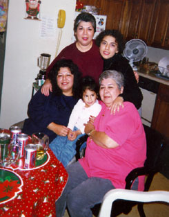

My Mother,
Christine and I (Kelley) are Texas born and bred. Yee-haw!! We are originally
from the Houston/Galveston area. (Shout out to all the family we left behind.)
Though we often speak of how much we miss the Texas weather, Tex-Mex Tamales
and "pan dulce", I think that wild horses could not keep us from our adopted
state of New Jersey. I always dreamed of owning my very own business. I had tried every type
of quick start up business that you can imagine. It wasn't until I drastically
changed myself (spiritually and personally) that I really saw the opportunity
that I needed to take my ideas to the next level.
